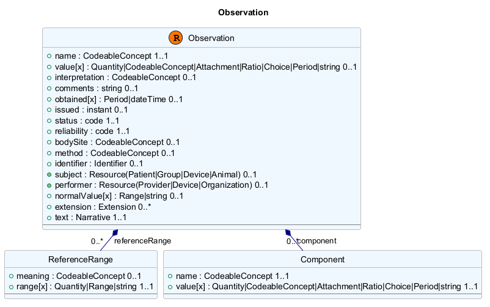

@startuml
title Observation
skinparam nodesep 10
skinparam ranksep 10
skinparam classBackgroundColor Aliceblue
skinparam classBorderColor Gray
skinparam classArrowColor Navy
class Observation << (R, #FF7700) >> {
+ name : CodeableConcept 1..1 [[[http://www/Observation/name {Definition}]]]
+ value[x] : Quantity|CodeableConcept|Attachment|Ratio|Choice|Period|string 0..1 [[[http://www/Observation/value%5Bx%5D {Definition}]]]
+ interpretation : CodeableConcept 0..1 [[[http://www/Observation/interpretation {Definition}]]]
+ comments : string 0..1 [[[http://www/Observation/comments {Definition}]]]
+ obtained[x] : Period|dateTime 0..1 [[[http://www/Observation/obtained%5Bx%5D {Definition}]]]
+ issued : instant 0..1 [[[http://www/Observation/issued {Definition}]]]
+ status : code 1..1 [[[http://www/Observation/status {Definition}]]]
+ reliability : code 1..1 [[[http://www/Observation/reliability {Definition}]]]
+ bodySite : CodeableConcept 0..1 [[[http://www/Observation/bodySite {Definition}]]]
+ method : CodeableConcept 0..1 [[[http://www/Observation/method {Definition}]]]
+ identifier : Identifier 0..1 [[[http://www/Observation/identifier {Definition}]]]
+ subject : Resource(Patient|Group|Device|Animal) 0..1 [[[http://www/Observation/subject {Definition}]]]
+ performer : Resource(Provider|Device|Organization) 0..1 [[[http://www/Observation/performer {Definition}]]]
+ normalValue[x] : Range|string 0..1 [[[http://www/Observation/normalValue%5Bx%5D {Definition}]]]
+ extension : Extension 0..* [[[http://www/Observation/extension {Definition}]]]
+ text : Narrative 1..1 [[[http://www/Observation/text {Definition}]]]
--
}
url of Observation is [[http://www/Observation {Observation definition}]]
class ReferenceRange << (E, Aliceblue ) >> {
+ meaning : CodeableConcept 0..1 [[[http://www/referenceRange/meaning {Definition}]]]
+ range[x] : Quantity|Range|string 1..1 [[[http://www/referenceRange/range%5Bx%5D {Definition}]]]
--
}
url of ReferenceRange is [[http://www/ReferenceRange{ReferenceRange definition}]]
class Component << (E, Aliceblue ) >> {
+ name : CodeableConcept 1..1 [[[http://www/component/name {Definition}]]]
+ value[x] : Quantity|CodeableConcept|Attachment|Ratio|Choice|Period|string 1..1 [[[http://www/component/value%5Bx%5D {Definition}]]]
--
}
url of Component is [[http://www/Component {Component definition}]]
Observation *-- "0..*" ReferenceRange : referenceRange
Observation *-- "0..*" Component : component
hide methods
hide ReferenceRange circle
hide Component circle
@enduml